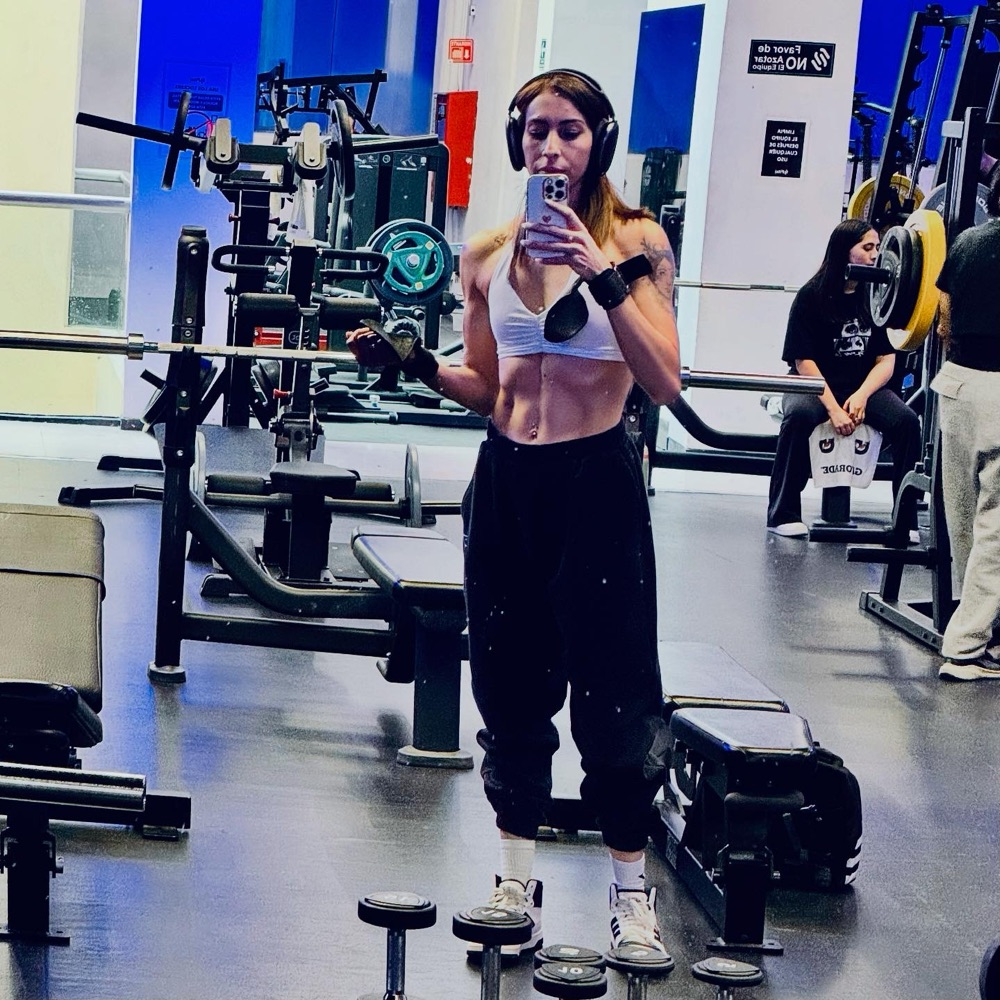
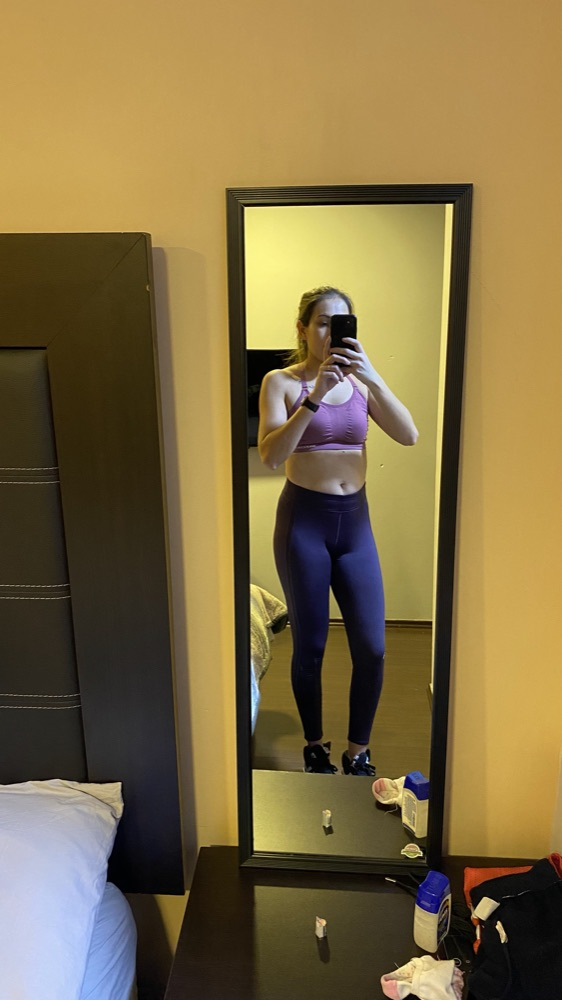
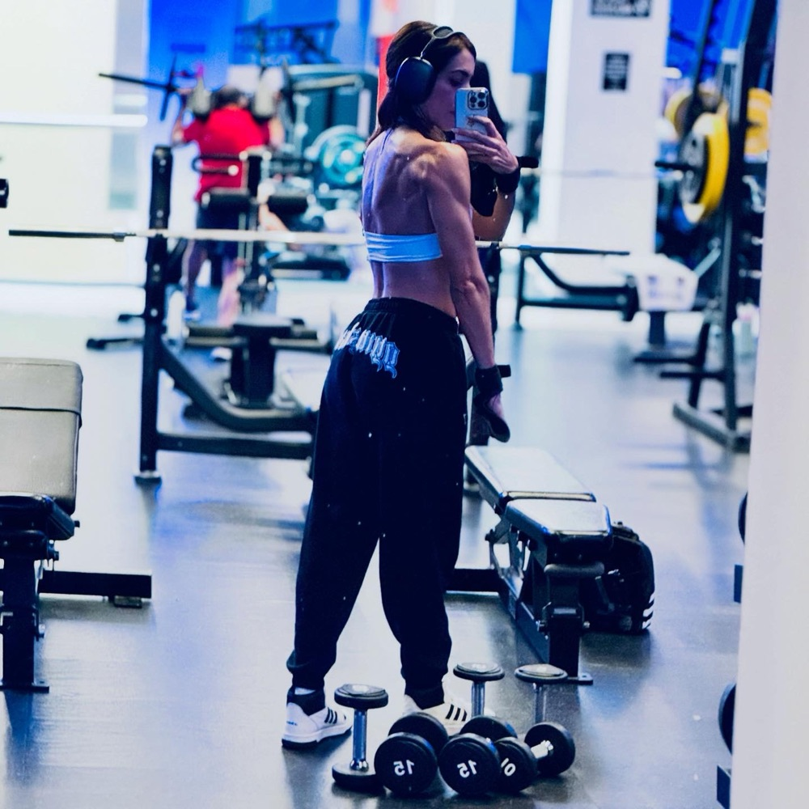
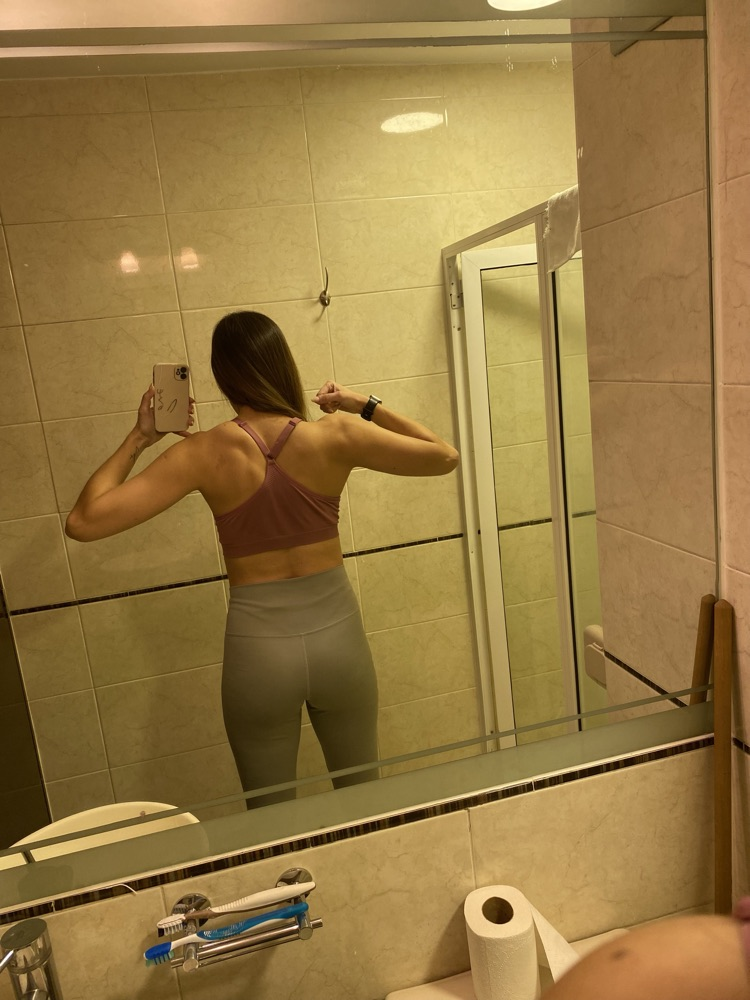
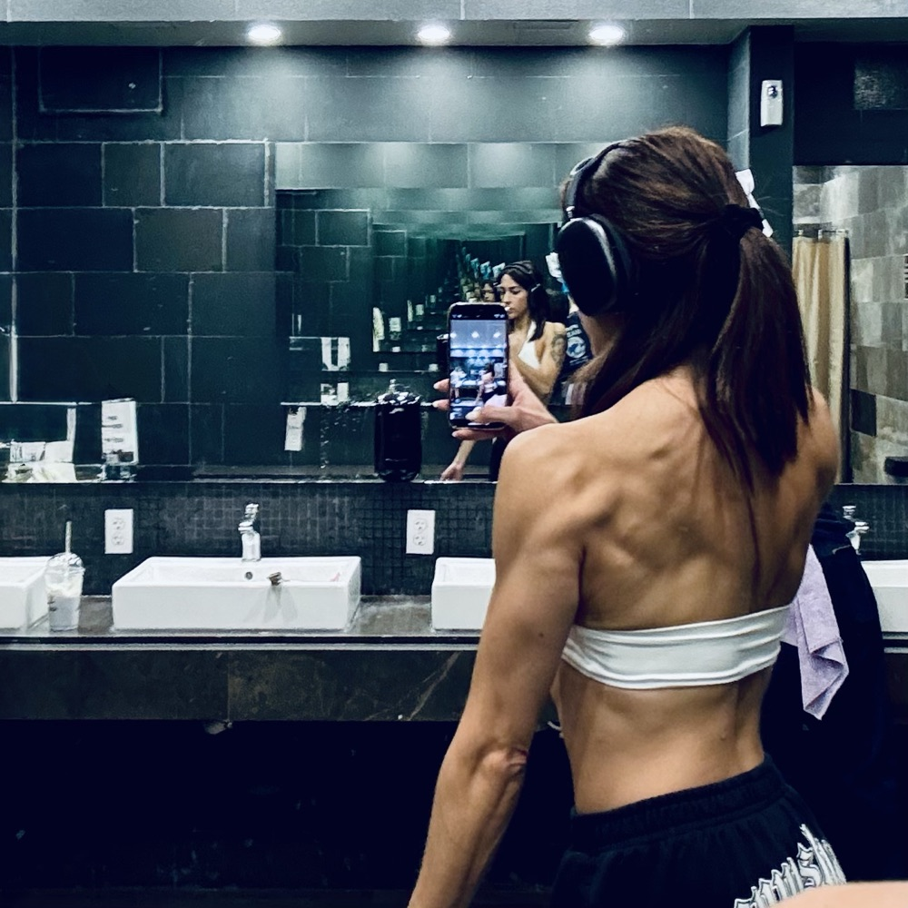
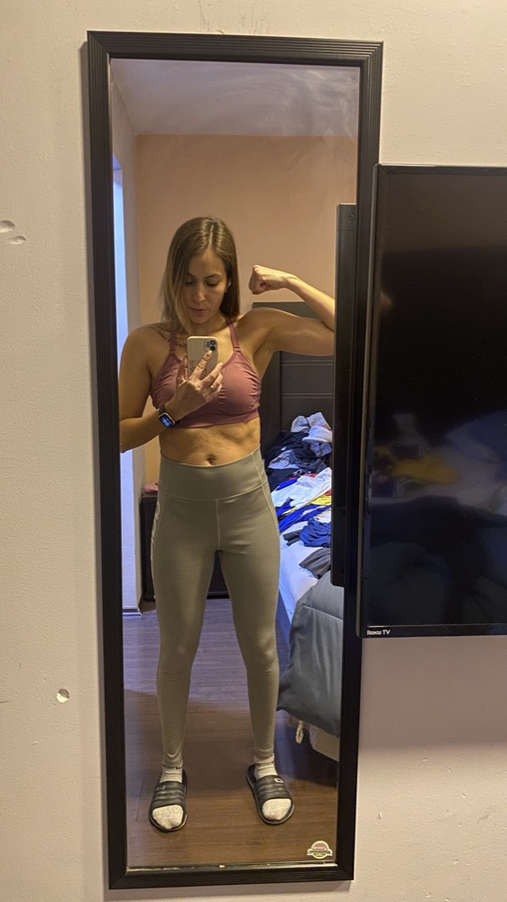
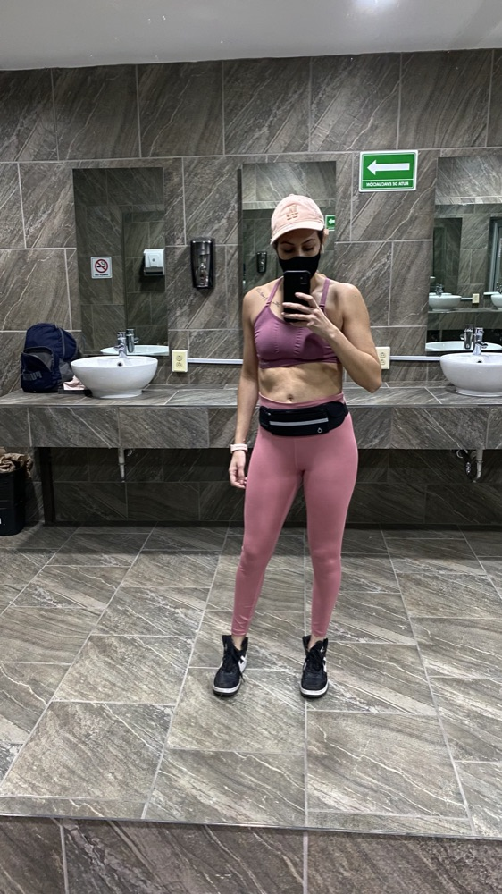
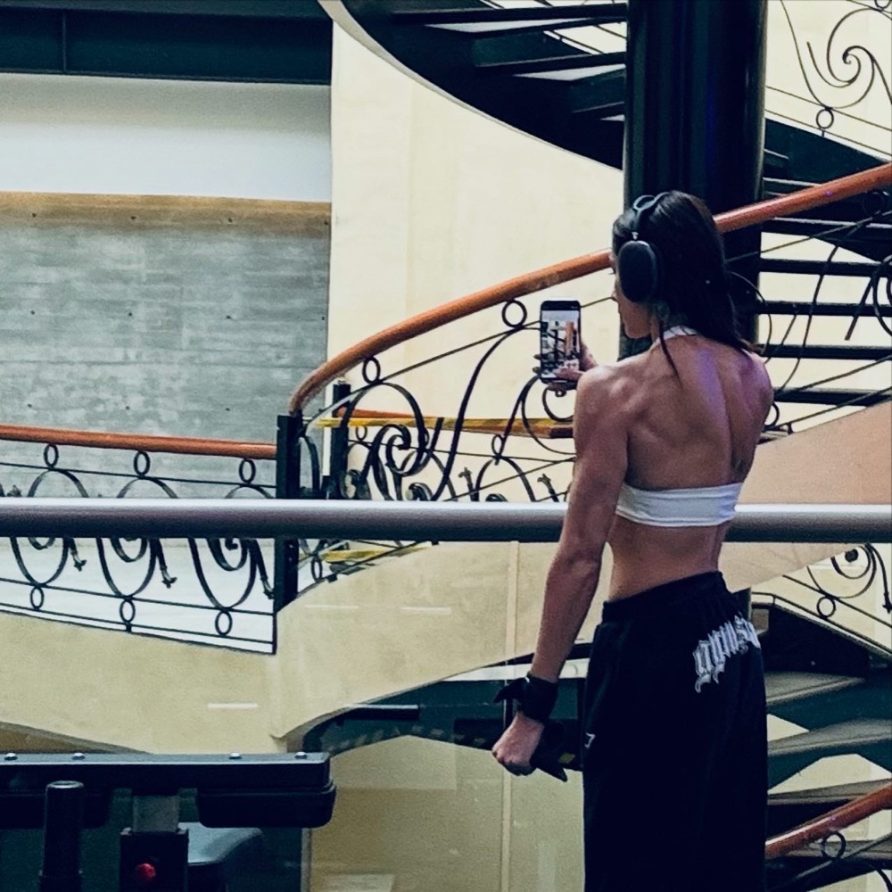
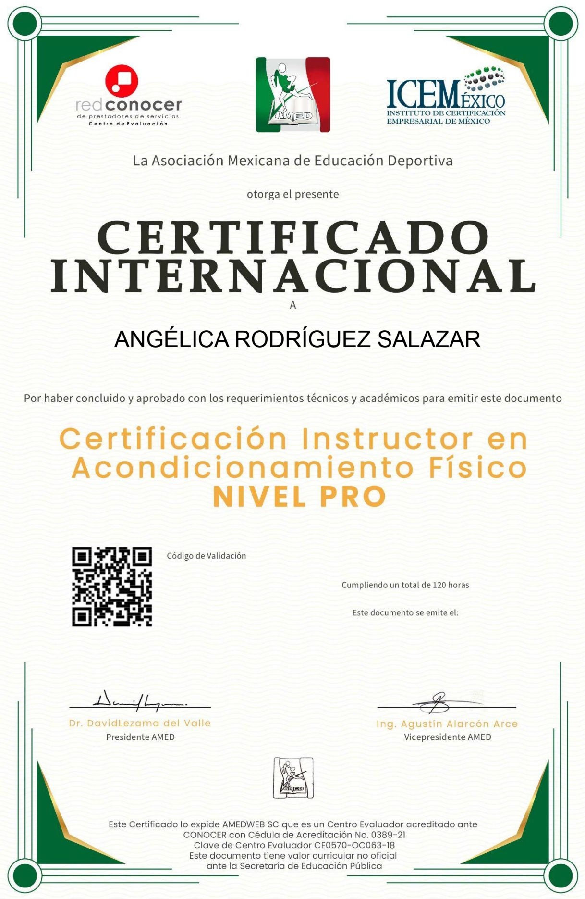
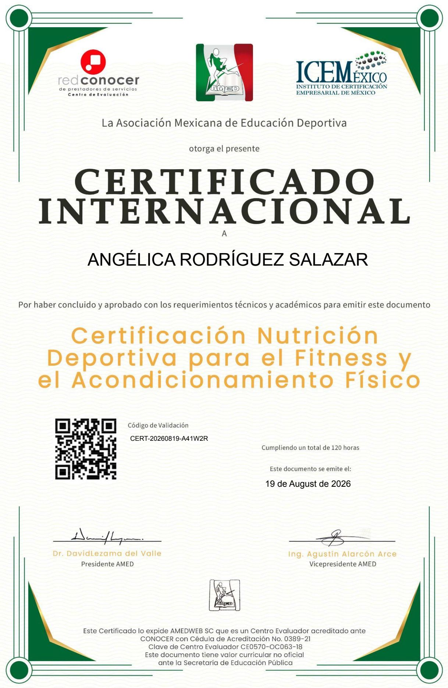

entrenando
Inicio / Conóceme
ConócemeHola, soy Angélica Rodríguez.
Coach de entrenamiento con certificación en nutrición deportiva, estudiante de Nutrición y mamá de tres.
Te ayudo a construir una relación diferente con el entrenamiento y la alimentación: no perseguir un cuerpo perfecto, sino construir un cuerpo fuerte, saludable y capaz.
“Trabaja con tu cuerpo, no en contra de él.”
Hace 8 años comencé a entrenar con un objetivo muy sencillo: quería cambiar mi cuerpo. Después de tres hijos, mi cuerpo había cambiado, y yo también. Quería recuperar fuerza, ganar músculo y volver a sentirme cómoda conmigo.
Con el tiempo descubrí que el entrenamiento era mucho más que estética. Aprendí a observar cómo responde mi cuerpo al entrenamiento, al descanso y a la alimentación, y entendí que tiene una capacidad extraordinaria de adaptarse cuando le damos lo que necesita.
El músculo no es solo lo que vemos en el espejo: es un tejido metabólicamente activo, capaz de producir mioquinas que participan en procesos de salud y metabolismo. Así, mi meta dejó de ser “quiero verme mejor” y se convirtió en:
“Quiero construir un cuerpo fuerte, funcional y saludable que me acompañe durante muchos años.”
Con la alimentación pasó algo parecido. Aprendí que comer saludable no es vivir a dieta, eliminar grupos de alimentos ni seguir reglas cada vez más estrictas. Es darle a tu cuerpo suficiente energía, proteína, fibra, vitaminas, minerales y variedad.
La transformación no viene de hacer más y comer menos. Viene de entender lo que haces y por qué lo haces. Y cuando lo entiendes, el cambio deja de ser solamente físico.
Antes y después.
Años de entrenamiento constante y una alimentación que disfruto, sin dietas extremas.







Lo que respalda mi trabajo.
Toda esta experiencia despertó en mí la necesidad de seguir estudiando y convertirla en conocimiento para compartir.

Instructora en Acondicionamiento Físico, Nivel PRO
Asociación Mexicana de Educación Deportiva (AMED), centro evaluador acreditado ante CONOCER.
Ver certificado ↗
Nutrición Deportiva para el Fitness y el Acondicionamiento Físico
Asociación Mexicana de Educación Deportiva (AMED), centro evaluador acreditado ante CONOCER.
Ver certificado ↗¿Te gustaría entrenar conmigo?
Mira cómo funciona el ciclo de 6 semanas o revisa los planes.